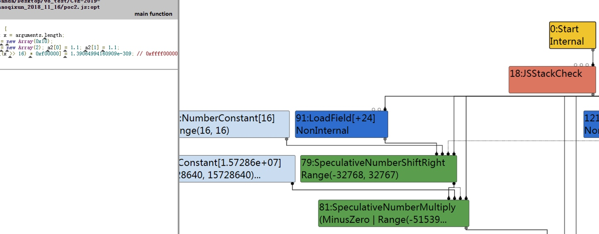
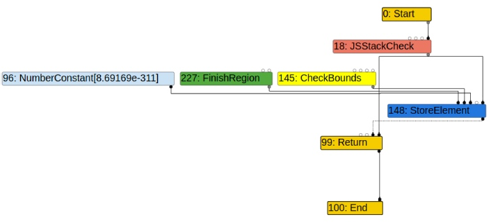
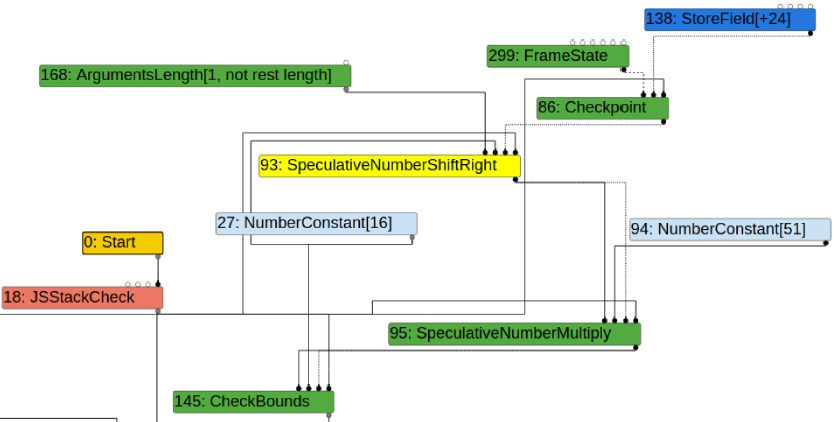
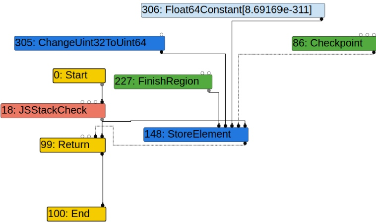

[TOC]
漏洞信息
- Report: Nov 2018 |
fix info https://chromium-review.googlesource.com/c/v8/v8/+/1363142
fix commit https://chromium.googlesource.com/v8/v8/+/deee0a87c0567f9e9bf18e1c8e2417c2f09d9b04
- CVE-2019-5782
- Blink>JavaScript>WebAssembly Blink>JavaScript
编译
可利用v8版本
得到版本v8版本 b474b3102bd4a95eafcdb68e0e44656046132bc9 |
fix分析
static const int kArgumentsBits = 16; |
1.2. PoC 分析
poc1 https://chromium-review.googlesource.com/c/v8/v8/+/1363142/3/test/mjsunit/regress/regress-crbug-906043.js
As similar to Math.expm1, x >> 16 is evaluated as false at simplified-lowering phase.
We can do Out-Of-Bounds R/W via CheckBounds elimination.
function fun(arg) { |
poc2 https://github.com/tunz/js-vuln-db/blob/master/v8/CVE-2019-5782.md
function opt(arg) { |
开始分析poc2
typed lowering分析

在SpeculativeNumberShiftRight节点上面有一个LoadField节点，在这个优化阶段，编译器无法得到LoadFiled节点的值，所以对NumberShiftRight进行 range analysis 时，会将其范围直接认为是int32的最大和最小值。
Type OperationTyper::NumberShiftRight(Type lhs, Type rhs) { |
escape analysis phase
./d8 --shell --allow-natives-syntax --trace-turbo ~/Desktop/v8_test/CVE-2019-5782_zhaoqixun_2018_11_16/poc2.js |
win7下wen访问web分析
turbolizer 分析后看到在 load elimination,escape analysis时
Although x can be large than 65534, optimizer thinks x >> 16 is 0.
That causes simplified-lowerer to do CheckBounds elimination.
void VisitCheckBounds(Node* node, SimplifiedLowering* lowering) { |
As we expected, false propagation makes index_type_Min/Max() 0.
[-] TypeArgumentsLength was called |
the result of checking the turbolizer in the escape analysis phase,

which shows that checkbounds exist. Here’s what we can check for this CheckBounds:

simplified-lowering phases
在SimplifiedLoweringPhase阶段会对SpeculativeNumberShiftRight的范围再次计算，用于消除CheckBounds：16 >> x is calculated, and multiply constant value (51) to result value.
And final result value is input node of CheckBounds.
However, after the simplified-lowering phases, this CheckBounds Node will disappear as follows.

So, now there is no boundary check, so you can freely access OOB R / W. :)
Exploit itself is incredibly simple, since OOB R / W is available
参考文章
Google_CTF_2018_DuplicateAdditionReducer.md
The above link covers Turbofan fairly well.
Math.expm1-35C3_CTF_2018_V8_Krautflare patch_ctf +0和-0不分的 优化错误
漏洞利用思路
因为错误的假定，typer输入了错误的长度范围
>>> len("10000000000000000") |
最终能访问 1*index form的位置
最终利用
OOB R/W 有效后，调整unboxed double array’s l;ength去造成 另一个oob r/w.
修改 backing_store of ArrayBuffer 通过仿制 ArrayBuffer在他之后。
- 用 rop payload
- wasm function 的v8 进程内存创建了rwx page.放shellcode在这个区段然后arb code
有了越界写，怎么知道写入哪里写入 victim array length 这里是51
function fun(arg) { |
a1在前，victim在后，从前往后写入
写python脚本去遍历m_index 范围 0-100
python3 ~/Desktop/v8_test/CVE-2019-5782_zhaoqixun_2018_11_16/CVE-2019-5782_exp2_py.py -f ~/Desktop/v8_test/CVE-2019-5782_zhaoqixun_2018_11_16/CVE-2019-5782_exp2.js |
尝试拿到任意读写
之前有了越界写，可以写入 victim 长度，然后再控制victim后面的ArrayBuffer 长度。
- 在后面构造Array 如
let leaked = [0xdada, 0xadad, f, {}, 1.1];，尝试读取 victim[index] == 0xdada和 0xadad 找到 wasm_f_idx，拿到 wasm_obj_address - 在后面构造ArrayBuffer 如
let ab = new ArrayBuffer(0x50);,尝试读取 victim[index] ==0x50 找到 ab_ArrayBuffer_length_idx,这时候可以控制 ArrayBuffer ‘s backing_store。 - 通过 ArrayBuffer ‘s backing_store 可以AAR，AAW
- 注意最后rwx写入时候偏移不用+1
最终利用-两种实现
…